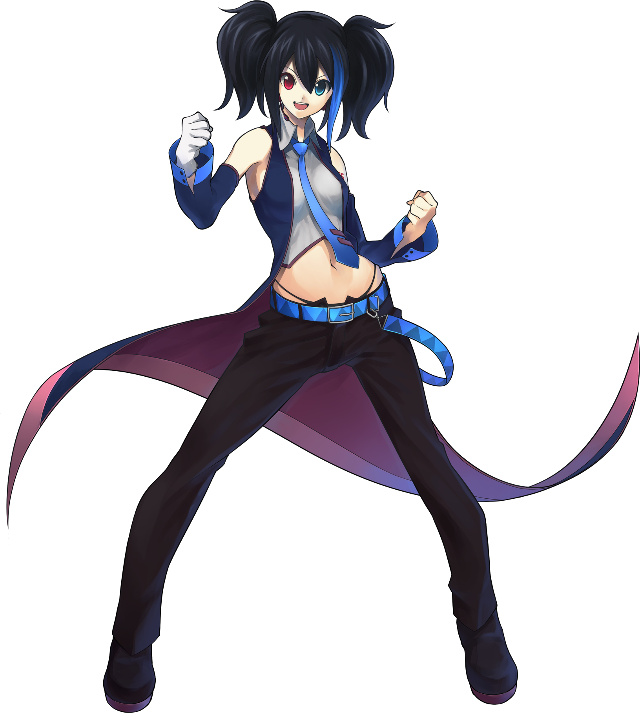

UTAU is a singing voice synthesizer software that allows users to create
songs using voice banks. It was developed by Ameya/Ayame and has gained
popularity for its user-friendly interface and flexibility. UTAU enables
users to input lyrics and melodies, which the software then synthesizes
into a singing voice using pre-recorded samples from various voice
actors and singers. This software is often used by hobbyists and
independent musicians to produce music without the need for a human
singer, unlike vocaloid, this software if FREE!
Fun fact about UTAU: The name "UTAU" comes from the Japanese word
"歌う" (utau), which means "to sing."
Notable UTAU characters include Teto Kasane and Kasane Ted (lower pitch of Teto, g-5), Momone Momo,
Defoko/Utane Uta, Ruko Yokune, and Namine Ritsu. Each character has its own unique voice and
personality.
Click them to find out more ^ - ^
\

Kasane Teto is especially rising up to popularity because of her recent release of her synthesizer voicebank which was the voicebank used to make "Machine Love" by Jamie Paige
Fun fact about Defoko: She doesn't have someone to voice her. Her voice is purely made from a computer and she is the default voicebank that comes pre-packages with the UTAU vocal synthesizer softwareS.
Unlike the VOCALOID software, you can make your own voicebank for free!
and the only thing that you need is a computer and a microphone.
───── ⋆⋅☆⋅⋆ ─────
To know more, you can always visit the UTAU wiki and the voicebanks' official page for version updates and announcements.


 \
\